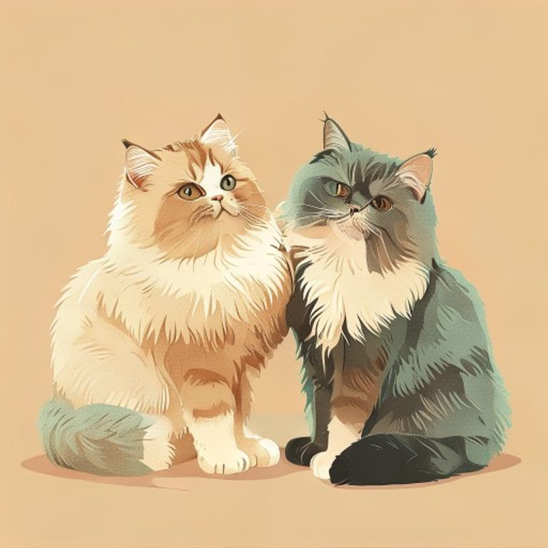

記低佢對你嘅每個反應、你對佢嘅每個習慣，
用數據搵出「原來咁做佢先錫我」。

Day 142 · 相處紀錄貓唔識講嘢，但佢嘅反應從來冇呃過你。每次互動 10 秒記低——佢點反應、你做咗咩——分析引擎就會搵出規律。
Tap 幾粒掣就完成：佢嘅反應（貼近／呼嚕／飛機耳…）＋你嘅行為（餵食／梳毛／逗貓棒…）。瞓前仲可以一次過補記。
近 7 日正面反應加權計分，每隻貓獨立追蹤。今日 72 分，上星期 66——你嘅努力，睇得見。
透明統計，唔靠 AI 老作：邊樣嘢令佢正面反應率飆升、邊樣嘢次次換嚟飛機耳，證據確鑿先出建議。
實例：玩完逗貓棒後 30 分鐘內，貓A 嘅正面反應率係 82%（平時得 55%）。結論：玩完先摸，事半功倍。而「抱佢」7 次有 5 次飛機耳——英長唔受抱，坐埋佢隔離等佢主動先係正路。
尾巴、耳仔、鬍鬚、坐姿、叫聲——五大類即時解碼，用正經行為學，唔靠估。
貓界嘅「我信你」。慢慢眨返俾佢，係唔使錢又最有效嘅示愛方法。
每個品種：四維性格條（黐人度／接受被抱／活躍度／嗲唔嗲）＋溝貓策略＋常見地雷。仲有配對測驗：想養第一隻貓，定想幫屋企貓搵個夾嘅新朋友？
任務由你嘅數據＋品種特性生成，日日唔同。完成晒先保得住條 Streak——同貓嘅感情，係逐日儲返嚟。
免費、唔使 login、所有數據淨係存喺你部手機。
而家就用得，唔使等。